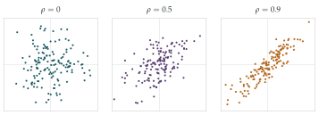

In this question, \(\mathrm{Corr}(U, V)\) denotes the product moment correlation coefficient between the random variables \(U\) and \(V\), defined by \[\mathrm{Corr}(U, V) \equiv \frac{\mathrm{Cov}(U, V)}{\sqrt{\mathrm{Var}(U)\mathrm{Var}(V)}}.\] The independent random variables \(Z_1\), \(Z_2\) and \(Z_3\) each have expectation \(0\) and variance \(1\). What is the value of \(\mathrm{Corr}(Z_1, Z_2)\)?
Let \(Y_1 = Z_1\) and let \[Y_2 = \rho_{12}Z_1 + (1 - \rho_{12}^2)^{\frac12}Z_2,\] where \(\rho_{12}\) is a given constant with \(-1 < \rho_{12} < 1\). Find \(\mathrm{E}(Y_2)\), \(\mathrm{Var}(Y_2)\) and \(\mathrm{Corr}(Y_1, Y_2)\).
Now let \(Y_3 = aZ_1 + bZ_2 + cZ_3\), where \(a\), \(b\) and \(c\) are real constants and \(c \geq 0\). Given that \(\mathrm{E}(Y_3) = 0\), \(\mathrm{Var}(Y_3) = 1\), \(\mathrm{Corr}(Y_1, Y_3) = \rho_{13}\) and \(\mathrm{Corr}(Y_2, Y_3) = \rho_{23}\), express \(a\), \(b\) and \(c\) in terms of \(\rho_{23}\), \(\rho_{13}\) and \(\rho_{12}\).
Given constants \(\mu_i\) and \(\sigma_i\), for \(i = 1\), \(2\) and \(3\), give expressions in terms of the \(Y_i\) for random variables \(X_i\) such that \(\mathrm{E}(X_i) = \mu_i\), \(\mathrm{Var}(X_i) = \sigma_i^2\) and \(\mathrm{Corr}(X_i, X_j) = \rho_{ij}\).
The hook
A bank wants to know how likely it is to lose money on a portfolio of shares. Share prices move together: when one falls, others tend to fall too. To simulate thousands of possible futures, the bank must generate random numbers that are correlated in exactly the right way. How do you manufacture random variables with prescribed correlations, starting from independent ones?
This question gives the recipe, step by step, for three variables. Each new variable is a combination of the previous independent ingredients, plus a fresh independent ingredient to make up the variance. The construction is a famous piece of linear algebra in disguise, the Cholesky decomposition, and it also reveals a hidden constraint: not every set of correlations is possible.
Covariance and correlation were removed from the STEP specification in 2019. The covariance is \(\mathrm{Cov}(U, V) = \mathrm{E}(UV) - \mathrm{E}(U)\mathrm{E}(V)\); it is zero for independent variables, and it is linear in each argument: \(\mathrm{Cov}(aU + bV, W) = a\,\mathrm{Cov}(U, W) + b\,\mathrm{Cov}(V, W)\). Also \(\mathrm{Var}(U) = \mathrm{Cov}(U, U)\). The correlation always lies between \(-1\) and \(1\).
Before you start
\(Z_1\) and \(Z_2\) are independent. What is their covariance, and so their correlation?
Independent variables satisfy \(\mathrm{E}(Z_1Z_2) = \mathrm{E}(Z_1)\,\mathrm{E}(Z_2)\). So the covariance is \(0\), and \(\mathrm{Corr}(Z_1, Z_2) = 0\).
Working it through
Stage 1 Two variables
\(\mathrm{E}(Y_2) = 0\). Since \(Z_1\) and \(Z_2\) are independent with variance \(1\), \[\mathrm{Var}(Y_2) = \rho_{12}^2 + (1 - \rho_{12}^2) = 1, \qquad \mathrm{Cov}(Y_1, Y_2) = \mathrm{Cov}\bigl(Z_1, \rho_{12}Z_1 + \sqrt{1 - \rho_{12}^2}\,Z_2\bigr) = \rho_{12}.\] Both variances are \(1\), so \(\mathrm{Corr}(Y_1, Y_2) = \rho_{12}\).■
Think of \(Z_1\) and \(Z_2\) as perpendicular unit vectors. Where is \(Y_2\)? What is the cosine of the angle between \(Y_1\) and \(Y_2\)?
\(Y_2 = \rho_{12}Z_1 + \sqrt{1 - \rho_{12}^2}\,Z_2\) is a unit vector making angle \(\theta\) with \(Z_1 = Y_1\), where \(\cos\theta = \rho_{12}\). Correlation is the cosine of the angle between the variables, viewed as vectors (Figure 13.7.1).
Stage 2 The third variable
Write down the three conditions \(\mathrm{Var}(Y_3) = 1\), \(\mathrm{Cov}(Y_1, Y_3) = \rho_{13}\), \(\mathrm{Cov}(Y_2, Y_3) = \rho_{23}\) in terms of \(a\), \(b\), \(c\).
Using linearity and independence: \[a^2 + b^2 + c^2 = 1, \qquad a = \rho_{13}, \qquad \rho_{12}a + \sqrt{1 - \rho_{12}^2}\,b = \rho_{23}.\] So \[a = \rho_{13}, \qquad b = \frac{\rho_{23} - \rho_{12}\rho_{13}}{\sqrt{1 - \rho_{12}^2}}, \qquad c = \sqrt{1 - \rho_{13}^2 - \frac{(\rho_{23} - \rho_{12}\rho_{13})^2}{1 - \rho_{12}^2}}. \qed\] (Taking the non-negative square root, as \(c \geq 0\).)
Stage 3 Any means and variances
Scaling and shifting do not change correlations, so \[X_i = \mu_i + \sigma_iY_i \qquad (i = 1, 2, 3)\] have means \(\mu_i\), variances \(\sigma_i^2\) and correlations \(\rho_{ij}\).■
The formula for \(c\) needs the quantity under the square root to be non-negative. Try \(\rho_{12} = \rho_{13} = \rho_{23} = -0.6\). What goes wrong, and why does it make sense that three variables cannot all be strongly negatively correlated with each other?

Looking back
Build up one variable at a time. Each new variable copied the right amount of the previous ingredients and added a fresh, independent one.
Covariance is linear. All the conditions became simple equations in the coefficients.
Correlation is a cosine. Thinking of standardised variables as unit vectors makes correlations into angles.
What’s really going on
The Cholesky decomposition
In matrix form, the construction says \(\mathbf{Y} = L\mathbf{Z}\) with a lower triangular matrix \[L = \begin{pmatrix} 1 & 0 & 0 \\ \rho_{12} & \sqrt{1 - \rho_{12}^2} & 0 \\ a & b & c \end{pmatrix},\] and the correlation matrix of \(\mathbf{Y}\) is \(R = LL^{\mathsf T}\). Writing a symmetric matrix as \(LL^{\mathsf T}\) is the Cholesky decomposition, found by the French military engineer André-Louis Cholesky around 1910 for solving the equations of geodetic surveys (published after his death in the First World War). It works whenever \(R\) is positive definite, and the computation is exactly what we did by hand: each row is solved in turn. It is the standard way to simulate correlated variables in finance, engineering and climate modelling.
Which correlations are possible?
The number under the square root for \(c\) must be non-negative. Multiplying out, the condition is \[1 - \rho_{12}^2 - \rho_{13}^2 - \rho_{23}^2 + 2\rho_{12}\rho_{13}\rho_{23} \geq 0,\] which is the condition that the determinant of the correlation matrix is non-negative. Geometrically: three unit vectors with pairwise angles \(\theta_{ij}\) (where \(\cos\theta_{ij} = \rho_{ij}\)) must actually fit together in space. If \(\rho_{12} = \rho_{13} = \rho_{23} = -0.6\), the angles are all about \(127^\circ\), and three vectors at \(127^\circ\) to each other would need angles summing to more than \(360^\circ\): impossible. In general a matrix can be a correlation matrix only if it is positive semi-definite, all its eigenvalues non-negative (Section 7.2). When correlations are estimated separately from incomplete data, this can fail, and statisticians must find the nearest valid correlation matrix, a problem solved by Nicholas Higham in 2002.
Francis Galton introduced correlation in 1888, while studying how the heights of parents and children are related, and Karl Pearson gave the product moment formula used in this question in 1896. Galton also noticed regression to the mean (Section 13.1). Pearson founded the world’s first university statistics department, at University College London, in 1911. The warning that “correlation does not imply causation” is almost as old as correlation itself.
The thinking skill
To build objects with prescribed relationships, add them one at a time, each a combination of what came before plus something new and independent.
This is the Gram–Schmidt process of linear algebra, run in reverse, and the Cholesky decomposition. At university it appears in least squares, in the theory of multivariate normal distributions and in the simulation of random processes.
Try this next
Impossible correlations. Show that three random variables cannot all have pairwise correlation \(\rho\) unless \(\rho \geq -\frac12\). What is the corresponding statement for \(n\) variables?
Check the determinant. Show that \(1 - \rho_{13}^2 - b^2 \geq 0\) is equivalent to \(\det R \geq 0\), where \(R\) is the \(3 \times 3\) correlation matrix.
Portfolio risk. Two shares have returns with standard deviations \(\sigma_1 = 0.2\) and \(\sigma_2 = 0.3\) and correlation \(\rho\). Find the standard deviation of a portfolio half in each, for \(\rho = -1\), \(0\) and \(1\). What does diversification achieve?
Recover the ingredients. Given \(Y_1\), \(Y_2\) as in the question, express \(Z_2\) in terms of \(Y_1\) and \(Y_2\). (This is the Gram–Schmidt step.)
Further reading
Gilbert Strang, Introduction to Linear Algebra (Wellesley-Cambridge), on positive definite matrices and the Cholesky factorisation.
Paul Glasserman, Monte Carlo Methods in Financial Engineering (Springer). Simulating correlated variables in practice; advanced but the early chapters are readable.
Theodore Porter, Karl Pearson: The Scientific Life in a Statistical Age (Princeton University Press).